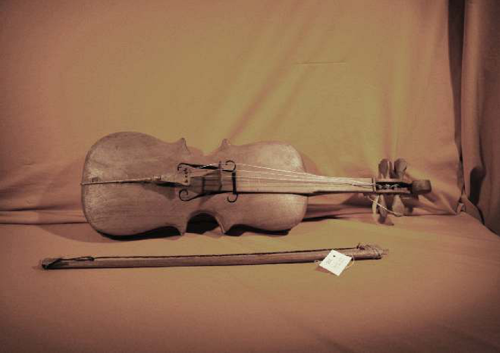

El turúmi de los Ava
Nota 021
Inicio > Blog Bitácora de un músico > Nota 021
Los Ava, un pueblo de habla guaraní de las tierras bajas de Bolivia y Argentina, preservaron una compleja tradición musical modelada por influencias amazónicas, arawak, andinas y coloniales, pese a siglos de guerras, desplazamientos e intervención misionera. Estrechamente vinculada a rituales como el aréte guásu, su herencia musical incluye tambores, flautas, trompetas, silbatos, idiófonos y el singular violín turumi, generalmente elaborados artesanalmente por los propios intérpretes e insertos en prácticas ceremoniales, sociales y simbólicas que articulan música, danza, memoria, sexualidad, guerra y relaciones entre vivos y muertos.
El turumi o miori es el único instrumento de cuerda del pueblo Ava. Su tamaño, estructura y proporciones son idénticos a los de una viola europea — a pesar de que uno de sus nombres sea una corrupción indígena de la palabra española "violín"; es de fabricación artesanal y presenta un aspecto mucho más "rústico" que el instrumento estándar. Sus cuatro cuerdas se afinan por quintas, como las del violín, pero una tercera más grave.
Se construye a partir de un único bloque de madera de cedro (Cedrela balansae o C. fissilis), que se talla y se ahueca. La tapa armónica se fabrica por separado —por lo general, con la misma madera— y se fija con una sustancia adhesiva obtenida de una planta trepadora local llamada sacha. El puente también se hace de cedro. El arco (mióri mbopúka) se prepara con una rama de palo amarillo (Phyllostylon rhamnoides), a la que se ata un haz de crines de caballo o de cerdas vegetales (píndo rívi). Las cuerdas más comunes se hacen con alambre fino o hilo de nailon, usado como sedal de pesca.
Para tocar el instrumento, este se apoya contra el pecho y el antebrazo. La altura del puente, por lo general exagerada, impide presionar la cuerda contra el diapasón; por ello, la longitud vibrante de la cuerda se modifica apoyando ligeramente los dedos sobre ella, un rasgo probablemente heredado de los arcos musicales de la región.
En general, se ha observado una disminución lenta y progresiva en el uso de este instrumento, reemplazado por violines de producción comercial. Probablemente fue introducido en la región por los franciscanos; esta influencia misionera se refleja en los contextos en los que el turúmi se toca actualmente: tanto en Argentina como en Bolivia, aparece durante la Semana Santa, después del aréte guásu, interpretando las líneas melódicas de las danzas circulares (chánka chánka), tonadas pascuales, alabanzas y cantos sin palabras del arerúya o aleluya.
También está presente durante la llamada "temporada del tairári" —de mayo a octubre—, hasta el comienzo de la siguiente "temporada del aréte", de octubre hasta el final del Carnaval. Durante este período, suele asociarse con el tairári, un género musical mediante el cual los cantores expresan sus sentimientos en apenas unas pocas palabras: un canto catártico que se entona hasta el agotamiento.
Más información sobre estos artefactos sonoros puede encontrarse en el libro digital de acceso libre Instrumentos musicales de los Ava, accesible a través de la sección "Libros digitales sobre música. Serie 1".